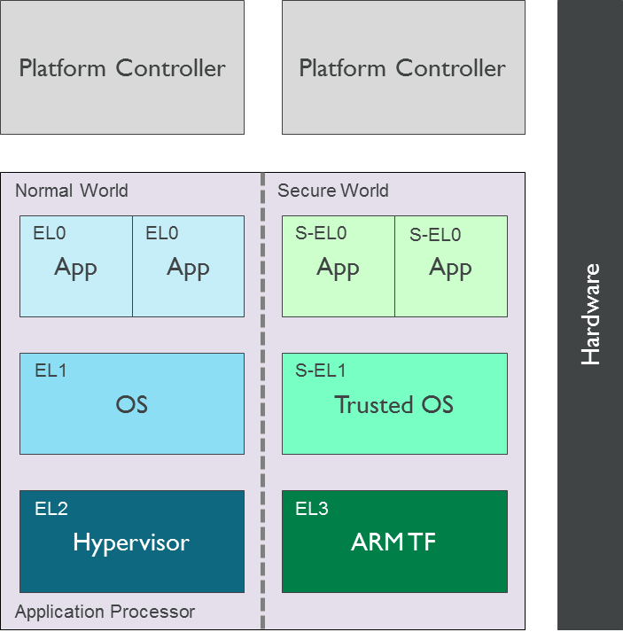
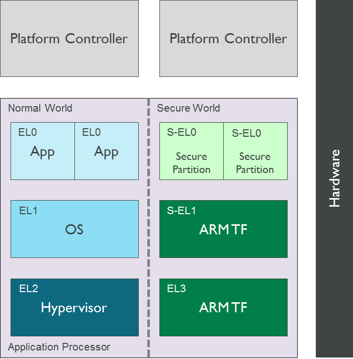

13. Secure Partition Manager (MM)¶
13.1. Foreword¶
Two implementations of a Secure Partition Manager co-exist in the TF-A codebase:
SPM based on the PSA FF-A specification (Secure Partition Manager).
SPM based on the MM interface.
Both implementations differ in their architectures and only one can be selected at build time.
This document describes the latter implementation where the Secure Partition Manager resides at EL3 and management services run from isolated Secure Partitions at S-EL0. The communication protocol is established through the Management Mode (MM) interface.
13.2. Background¶
In some market segments that primarily deal with client-side devices like mobile phones, tablets, STBs and embedded devices, a Trusted OS instantiates trusted applications to provide security services like DRM, secure payment and authentication. The Global Platform TEE Client API specification defines the API used by Non-secure world applications to access these services. A Trusted OS fulfils the requirements of a security service as described above.
Management services are typically implemented at the highest level of privilege in the system, i.e. EL3 in Trusted Firmware-A (TF-A). The service requirements are fulfilled by the execution environment provided by TF-A.
The following diagram illustrates the corresponding software stack:

In other market segments that primarily deal with server-side devices (e.g. data centres and enterprise servers) the secure software stack typically does not include a Global Platform Trusted OS. Security functions are accessed through other interfaces (e.g. ACPI TCG TPM interface, UEFI runtime variable service).
Placement of management and security functions with diverse requirements in a privileged Exception Level (i.e. EL3 or S-EL1) makes security auditing of firmware more difficult and does not allow isolation of unrelated services from each other either.
13.3. Introduction¶
A Secure Partition is a software execution environment instantiated in S-EL0 that can be used to implement simple management and security services. Since S-EL0 is an unprivileged Exception Level, a Secure Partition relies on privileged firmware (i.e. TF-A) to be granted access to system and processor resources. Essentially, it is a software sandbox in the Secure world that runs under the control of privileged software, provides one or more services and accesses the following system resources:
Memory and device regions in the system address map.
PE system registers.
A range of synchronous exceptions (e.g. SMC function identifiers).
Note that currently TF-A only supports handling one Secure Partition.
A Secure Partition enables TF-A to implement only the essential secure services in EL3 and instantiate the rest in a partition in S-EL0. Furthermore, multiple Secure Partitions can be used to isolate unrelated services from each other.
The following diagram illustrates the place of a Secure Partition in a typical Armv8-A software stack. A single or multiple Secure Partitions provide secure services to software components in the Non-secure world and other Secure Partitions.

The TF-A build system is responsible for including the Secure Partition image in the FIP. During boot, BL2 includes support to authenticate and load the Secure Partition image. A BL31 component called Secure Partition Manager (SPM) is responsible for managing the partition. This is semantically similar to a hypervisor managing a virtual machine.
The SPM is responsible for the following actions during boot:
Allocate resources requested by the Secure Partition.
Perform architectural and system setup required by the Secure Partition to fulfil a service request.
Implement a standard interface that is used for initialising a Secure Partition.
The SPM is responsible for the following actions during runtime:
Implement a standard interface that is used by a Secure Partition to fulfil service requests.
Implement a standard interface that is used by the Non-secure world for accessing the services exported by a Secure Partition. A service can be invoked through a SMC.
Alternatively, a partition can be viewed as a thread of execution running under the control of the SPM. Hence common programming concepts described below are applicable to a partition.
13.4. Description¶
The previous section introduced some general aspects of the software architecture of a Secure Partition. This section describes the specific choices made in the current implementation of this software architecture. Subsequent revisions of the implementation will include a richer set of features that enable a more flexible architecture.
13.4.1. Building TF-A with Secure Partition support¶
SPM is supported on the Arm FVP exclusively at the moment. The current implementation supports inclusion of only a single Secure Partition in which a service always runs to completion (e.g. the requested services cannot be preempted to give control back to the Normal world).
It is not currently possible for BL31 to integrate SPM support and a Secure Payload Dispatcher (SPD) at the same time; they are mutually exclusive. In the SPM bootflow, a Secure Partition image executing at S-EL0 replaces the Secure Payload image executing at S-EL1 (e.g. a Trusted OS). Both are referred to as BL32.
A working prototype of a SP has been implemented by re-purposing the EDK2 code and tools, leveraging the concept of the Standalone Management Mode (MM) in the UEFI specification (see the PI v1.6 Volume 4: Management Mode Core Interface). This will be referred to as the Standalone MM Secure Partition in the rest of this document.
To enable SPM support in TF-A, the source code must be compiled with the build
flag SPM_MM=1, along with EL3_EXCEPTION_HANDLING=1. On Arm
platforms the build option ARM_BL31_IN_DRAM must be set to 1. Also, the
location of the binary that contains the BL32 image
(BL32=path/to/image.bin) must be specified.
First, build the Standalone MM Secure Partition. To build it, refer to the instructions in the EDK2 repository.
Then build TF-A with SPM support and include the Standalone MM Secure Partition image in the FIP:
BL32=path/to/standalone/mm/sp BL33=path/to/bl33.bin \
make PLAT=fvp SPM_MM=1 EL3_EXCEPTION_HANDLING=1 ARM_BL31_IN_DRAM=1 all fip
13.4.2. Describing Secure Partition resources¶
TF-A exports a porting interface that enables a platform to specify the system resources required by the Secure Partition. Some instructions are given below. However, this interface is under development and it may change as new features are implemented.
A Secure Partition is considered a BL32 image, so the same defines that apply to BL32 images apply to a Secure Partition:
BL32_BASEandBL32_LIMIT.The following defines are needed to allocate space for the translation tables used by the Secure Partition:
PLAT_SP_IMAGE_MMAP_REGIONSandPLAT_SP_IMAGE_MAX_XLAT_TABLES.The functions
plat_get_secure_partition_mmap()andplat_get_secure_partition_boot_info()have to be implemented. The fileplat/arm/board/fvp/fvp_common.ccan be used as an example. It uses the defines ininclude/plat/arm/common/arm_spm_def.h.plat_get_secure_partition_mmap()returns an array of mmap regions that describe the memory regions that the SPM needs to allocate for a Secure Partition.plat_get_secure_partition_boot_info()returns aspm_mm_boot_info_tstruct that is populated by the platform with information about the memory map of the Secure Partition.
For an example of all the changes in context, you may refer to commit
e29efeb1b4, in which the port for FVP was introduced.
13.4.3. Accessing Secure Partition services¶
The SMC Calling Convention (Arm DEN 0028B) describes SMCs as a conduit for
accessing services implemented in the Secure world. The MM_COMMUNICATE
interface defined in the Management Mode Interface Specification (Arm DEN
0060A) is used to invoke a Secure Partition service as a Fast Call.
The mechanism used to identify a service within the partition depends on the
service implementation. It is assumed that the caller of the service will be
able to discover this mechanism through standard platform discovery mechanisms
like ACPI and Device Trees. For example, Volume 4: Platform Initialisation
Specification v1.6. Management Mode Core Interface specifies that a GUID is
used to identify a management mode service. A client populates the GUID in the
EFI_MM_COMMUNICATE_HEADER. The header is populated in the communication
buffer shared with the Secure Partition.
A Fast Call appears to be atomic from the perspective of the caller and returns
when the requested operation has completed. A service invoked through the
MM_COMMUNICATE SMC will run to completion in the partition on a given CPU.
The SPM is responsible for guaranteeing this behaviour. This means that there
can only be a single outstanding Fast Call in a partition on a given CPU.
13.4.4. Exchanging data with the Secure Partition¶
The exchange of data between the Non-secure world and the partition takes place
through a shared memory region. The location of data in the shared memory area
is passed as a parameter to the MM_COMMUNICATE SMC. The shared memory area
is statically allocated by the SPM and is expected to be either implicitly known
to the Non-secure world or discovered through a platform discovery mechanism
e.g. ACPI table or device tree. It is possible for the Non-secure world to
exchange data with a partition only if it has been populated in this shared
memory area. The shared memory area is implemented as per the guidelines
specified in Section 3.2.3 of the Management Mode Interface Specification
(Arm DEN 0060A).
The format of data structures used to encapsulate data in the shared memory is
agreed between the Non-secure world and the Secure Partition. For example, in
the Management Mode Interface specification (Arm DEN 0060A), Section 4
describes that the communication buffer shared between the Non-secure world and
the Management Mode (MM) in the Secure world must be of the type
EFI_MM_COMMUNICATE_HEADER. This data structure is defined in Volume 4:
Platform Initialisation Specification v1.6. Management Mode Core Interface.
Any caller of a MM service will have to use the EFI_MM_COMMUNICATE_HEADER
data structure.
13.5. Runtime model of the Secure Partition¶
This section describes how the Secure Partition interfaces with the SPM.
13.5.1. Interface with SPM¶
In order to instantiate one or more secure services in the Secure Partition in S-EL0, the SPM should define the following types of interfaces:
Interfaces that enable access to privileged operations from S-EL0. These operations typically require access to system resources that are either shared amongst multiple software components in the Secure world or cannot be directly accessed from an unprivileged Exception Level.
Interfaces that establish the control path between the SPM and the Secure Partition.
This section describes the APIs currently exported by the SPM that enable a Secure Partition to initialise itself and export its services in S-EL0. These interfaces are not accessible from the Non-secure world.
13.5.1.1. Conduit¶
The SMC Calling Convention (Arm DEN 0028B) specification describes the SMC and HVC conduits for accessing firmware services and their availability depending on the implemented Exception levels. In S-EL0, the Supervisor Call exception (SVC) is the only architectural mechanism available for unprivileged software to make a request for an operation implemented in privileged software. Hence, the SVC conduit must be used by the Secure Partition to access interfaces implemented by the SPM.
A SVC causes an exception to be taken to S-EL1. TF-A assumes ownership of S-EL1 and installs a simple exception vector table in S-EL1 that relays a SVC request from a Secure Partition as a SMC request to the SPM in EL3. Upon servicing the SMC request, Trusted Firmware-A returns control directly to S-EL0 through an ERET instruction.
13.5.1.2. Calling conventions¶
The SMC Calling Convention (Arm DEN 0028B) specification describes the 32-bit and 64-bit calling conventions for the SMC and HVC conduits. The SVC conduit introduces the concept of SVC32 and SVC64 calling conventions. The SVC32 and SVC64 calling conventions are equivalent to the 32-bit (SMC32) and the 64-bit (SMC64) calling conventions respectively.
13.5.1.3. Communication initiated by SPM¶
A service request is initiated from the SPM through an exception return instruction (ERET) to S-EL0. Later, the Secure Partition issues an SVC instruction to signal completion of the request. Some example use cases are given below:
A request to initialise the Secure Partition during system boot.
A request to handle a runtime service request.
13.5.1.4. Communication initiated by Secure Partition¶
A request is initiated from the Secure Partition by executing a SVC instruction. An ERET instruction is used by TF-A to return to S-EL0 with the result of the request.
For instance, a request to perform privileged operations on behalf of a partition (e.g. management of memory attributes in the translation tables for the Secure EL1&0 translation regime).
13.5.1.5. Interfaces¶
The current implementation reserves function IDs for Fast Calls in the Standard Secure Service calls range (see SMC Calling Convention (Arm DEN 0028B) specification) for each API exported by the SPM. This section defines the function prototypes for each function ID. The function IDs specify whether one or both of the SVC32 and SVC64 calling conventions can be used to invoke the corresponding interface.
13.5.1.6. Secure Partition Event Management¶
The Secure Partition provides an Event Management interface that is used by the SPM to delegate service requests to the Secure Partition. The interface also allows the Secure Partition to:
Register with the SPM a service that it provides.
Indicate completion of a service request delegated by the SPM
13.5.2. Miscellaneous interfaces¶
13.5.2.1. SPM_MM_VERSION_AARCH32¶
Description
Returns the version of the interface exported by SPM.
Parameters
uint32 - Function ID
SVC32 Version: 0x84000060
Return parameters
int32 - Status
On success, the format of the value is as follows:
Bit [31]: Must be 0
Bits [30:16]: Major Version. Must be 0 for this revision of the SPM interface.
Bits [15:0]: Minor Version. Must be 1 for this revision of the SPM interface.
On error, the format of the value is as follows:
NOT_SUPPORTED: SPM interface is not supported or not available for the client.
Usage
This function returns the version of the Secure Partition Manager implementation. The major version is 0 and the minor version is 1. The version number is a 31-bit unsigned integer, with the upper 15 bits denoting the major revision, and the lower 16 bits denoting the minor revision. The following rules apply to the version numbering:
Different major revision values indicate possibly incompatible functions.
For two revisions, A and B, for which the major revision values are identical, if the minor revision value of revision B is greater than the minor revision value of revision A, then every function in revision A must work in a compatible way with revision B. However, it is possible for revision B to have a higher function count than revision A.
Implementation responsibilities
If this function returns a valid version number, all the functions that are described subsequently must be implemented, unless it is explicitly stated that a function is optional.
See Error Codes for integer values that are associated with each return code.
13.5.3. Secure Partition Initialisation¶
The SPM is responsible for initialising the architectural execution context to
enable initialisation of a service in S-EL0. The responsibilities of the SPM are
listed below. At the end of initialisation, the partition issues a
MM_SP_EVENT_COMPLETE_AARCH64 call (described later) to signal readiness for
handling requests for services implemented by the Secure Partition. The
initialisation event is executed as a Fast Call.
13.5.3.1. Entry point invocation¶
The entry point for service requests that should be handled as Fast Calls is used as the target of the ERET instruction to start initialisation of the Secure Partition.
13.5.3.2. Architectural Setup¶
At cold boot, system registers accessible from S-EL0 will be in their reset state unless otherwise specified. The SPM will perform the following architectural setup to enable execution in S-EL0
13.5.3.3. MMU setup¶
The platform port of a Secure Partition specifies to the SPM a list of regions that it needs access to and their attributes. The SPM validates this resource description and initialises the Secure EL1&0 translation regime as follows.
Device regions are mapped with nGnRE attributes and Execute Never instruction access permissions.
Code memory regions are mapped with RO data and Executable instruction access permissions.
Read Only data memory regions are mapped with RO data and Execute Never instruction access permissions.
Read Write data memory regions are mapped with RW data and Execute Never instruction access permissions.
If the resource description does not explicitly describe the type of memory regions then all memory regions will be marked with Code memory region attributes.
The
UXNandPXNbits are set for regions that are not executable by S-EL0 or S-EL1.
13.5.3.4. System Register Setup¶
System registers that influence software execution in S-EL0 are setup by the SPM as follows:
SCTLR_EL1UCI=1EOE=0WXN=1nTWE=1nTWI=1UCT=1DZE=1I=1UMA=0SA0=1C=1A=1M=1
CPACR_EL1FPEN=b'11
PSTATED,A,I,F=1CurrentEL=0(EL0)SpSel=0(Thread mode)NRW=0(AArch64)
13.5.3.5. General Purpose Register Setup¶
SPM will invoke the entry point of a service by executing an ERET instruction. This transition into S-EL0 is special since it is not in response to a previous request through a SVC instruction. This is the first entry into S-EL0. The general purpose register usage at the time of entry will be as specified in the “Return State” column of Table 3-1 in Section 3.1 “Register use in AArch64 SMC calls” of the SMC Calling Convention (Arm DEN 0028B) specification. In addition, certain other restrictions will be applied as described below.
SP_EL0A non-zero value will indicate that the SPM has initialised the stack pointer for the current CPU.
The value will be 0 otherwise.
X4-X30The values of these registers will be 0.
X0-X3Parameters passed by the SPM.
X0: Virtual address of a buffer shared between EL3 and S-EL0. The buffer will be mapped in the Secure EL1&0 translation regime with read-only memory attributes described earlier.X1: Size of the buffer in bytes.X2: Cookie value (IMPLEMENTATION DEFINED).X3: Cookie value (IMPLEMENTATION DEFINED).
13.5.4. Runtime Event Delegation¶
The SPM receives requests for Secure Partition services through a synchronous
invocation (i.e. a SMC from the Non-secure world). These requests are delegated
to the partition by programming a return from the last
MM_SP_EVENT_COMPLETE_AARCH64 call received from the partition. The last call
was made to signal either completion of Secure Partition initialisation or
completion of a partition service request.
13.5.4.1. MM_SP_EVENT_COMPLETE_AARCH64¶
Description
Signal completion of the last SP service request.
Parameters
uint32 - Function ID
SVC64 Version: 0xC4000061
int32 - Event Status Code
Zero or a positive value indicates that the event was handled successfully. The values depend upon the original event that was delegated to the Secure partition. They are described as follows.
SUCCESS: Used to indicate that the Secure Partition was initialised or a runtime request was handled successfully.Any other value greater than 0 is used to pass a specific Event Status code in response to a runtime event.
A negative value indicates an error. The values of Event Status code depend on the original event.
Return parameters
int32 - Event ID/Return Code
Zero or a positive value specifies the unique ID of the event being delegated to the partition by the SPM.
In the current implementation, this parameter contains the function ID of the
MM_COMMUNICATESMC. This value indicates to the partition that an event has been delegated to it in response to anMM_COMMUNICATErequest from the Non-secure world.A negative value indicates an error. The format of the value is as follows:
NOT_SUPPORTED: Function was called from the Non-secure world.
See Error Codes for integer values that are associated with each return code.
uint32 - Event Context Address
Address of a buffer shared between the SPM and Secure Partition to pass event specific information. The format of the data populated in the buffer is implementation defined.
The buffer is mapped in the Secure EL1&0 translation regime with read-only memory attributes described earlier.
For the SVC64 version, this parameter is a 64-bit Virtual Address (VA).
For the SVC32 version, this parameter is a 32-bit Virtual Address (VA).
uint32 - Event context size
Size of the memory starting at Event Address.
uint32/uint64 - Event Cookie
This is an optional parameter. If unused its value is SBZ.
Usage
This function signals to the SPM that the handling of the last event delegated to a partition has completed. The partition is ready to handle its next event. A return from this function is in response to the next event that will be delegated to the partition. The return parameters describe the next event.
Caller responsibilities
A Secure Partition must only call
MM_SP_EVENT_COMPLETE_AARCH64to signal completion of a request that was delegated to it by the SPM.Callee responsibilities
When the SPM receives this call from a Secure Partition, the corresponding syndrome information can be used to return control through an ERET instruction, to the instruction immediately after the call in the Secure Partition context. This syndrome information comprises of general purpose and system register values when the call was made.
The SPM must save this syndrome information and use it to delegate the next event to the Secure Partition. The return parameters of this interface must specify the properties of the event and be populated in
X0-X3/W0-W3registers.
13.5.5. Secure Partition Memory Management¶
A Secure Partition executes at S-EL0, which is an unprivileged Exception Level. The SPM is responsible for enabling access to regions of memory in the system address map from a Secure Partition. This is done by mapping these regions in the Secure EL1&0 Translation regime with appropriate memory attributes. Attributes refer to memory type, permission, cacheability and shareability attributes used in the Translation tables. The definitions of these attributes and their usage can be found in the Armv8-A ARM (Arm DDI 0487).
All memory required by the Secure Partition is allocated upfront in the SPM, even before handing over to the Secure Partition for the first time. The initial access permissions of the memory regions are statically provided by the platform port and should allow the Secure Partition to run its initialisation code.
However, they might not suit the final needs of the Secure Partition because its final memory layout might not be known until the Secure Partition initialises itself. As the Secure Partition initialises its runtime environment it might, for example, load dynamically some modules. For instance, a Secure Partition could implement a loader for a standard executable file format (e.g. an PE-COFF loader for loading executable files at runtime). These executable files will be a part of the Secure Partition image. The location of various sections in an executable file and their permission attributes (e.g. read-write data, read-only data and code) will be known only when the file is loaded into memory.
In this case, the Secure Partition needs a way to change the access permissions
of its memory regions. The SPM provides this feature through the
MM_SP_MEMORY_ATTRIBUTES_SET_AARCH64 SVC interface. This interface is
available to the Secure Partition during a specific time window: from the first
entry into the Secure Partition up to the first SP_EVENT_COMPLETE call that
signals the Secure Partition has finished its initialisation. Once the
initialisation is complete, the SPM does not allow changes to the memory
attributes.
This section describes the standard SVC interface that is implemented by the SPM to determine and change permission attributes of memory regions that belong to a Secure Partition.
13.5.5.1. MM_SP_MEMORY_ATTRIBUTES_GET_AARCH64¶
Description
Request the permission attributes of a memory region from S-EL0.
Parameters
uint32 Function ID
SVC64 Version: 0xC4000064
uint64 Base Address
This parameter is a 64-bit Virtual Address (VA).
There are no alignment restrictions on the Base Address. The permission attributes of the translation granule it lies in are returned.
Return parameters
int32 - Memory Attributes/Return Code
On success the format of the Return Code is as follows:
Bits[1:0] : Data access permission
b’00 : No access
b’01 : Read-Write access
b’10 : Reserved
b’11 : Read-only access
Bit[2]: Instruction access permission
b’0 : Executable
b’1 : Non-executable
Bit[30:3] : Reserved. SBZ.
Bit[31] : Must be 0
On failure the following error codes are returned:
INVALID_PARAMETERS: The Secure Partition is not allowed to access the memory region the Base Address lies in.NOT_SUPPORTED: The SPM does not support retrieval of attributes of any memory page that is accessible by the Secure Partition, or the function was called from the Non-secure world. Also returned if it is used afterMM_SP_EVENT_COMPLETE_AARCH64.
See Error Codes for integer values that are associated with each return code.
Usage
This function is used to request the permission attributes for S-EL0 on a memory region accessible from a Secure Partition. The size of the memory region is equal to the Translation Granule size used in the Secure EL1&0 translation regime. Requests to retrieve other memory region attributes are not currently supported.
Caller responsibilities
The caller must obtain the Translation Granule Size of the Secure EL1&0 translation regime from the SPM through an implementation defined method.
Callee responsibilities
The SPM must not return the memory access controls for a page of memory that is not accessible from a Secure Partition.
13.5.5.2. MM_SP_MEMORY_ATTRIBUTES_SET_AARCH64¶
Description
Set the permission attributes of a memory region from S-EL0.
Parameters
uint32 - Function ID
SVC64 Version: 0xC4000065
uint64 - Base Address
This parameter is a 64-bit Virtual Address (VA).
The alignment of the Base Address must be greater than or equal to the size of the Translation Granule Size used in the Secure EL1&0 translation regime.
uint32 - Page count
Number of pages starting from the Base Address whose memory attributes should be changed. The page size is equal to the Translation Granule Size.
uint32 - Memory Access Controls
Bits[1:0] : Data access permission
b’00 : No access
b’01 : Read-Write access
b’10 : Reserved
b’11 : Read-only access
Bit[2] : Instruction access permission
b’0 : Executable
b’1 : Non-executable
Bits[31:3] : Reserved. SBZ.
A combination of attributes that mark the region with RW and Executable permissions is prohibited. A request to mark a device memory region with Executable permissions is prohibited.
Return parameters
int32 - Return Code
SUCCESS: The Memory Access Controls were changed successfully.DENIED: The SPM is servicing a request to change the attributes of a memory region that overlaps with the region specified in this request.INVALID_PARAMETER: An invalid combination of Memory Access Controls has been specified. The Base Address is not correctly aligned. The Secure Partition is not allowed to access part or all of the memory region specified in the call.NO_MEMORY: The SPM does not have memory resources to change the attributes of the memory region in the translation tables.NOT_SUPPORTED: The SPM does not permit change of attributes of any memory region that is accessible by the Secure Partition. Function was called from the Non-secure world. Also returned if it is used afterMM_SP_EVENT_COMPLETE_AARCH64.
See Error Codes for integer values that are associated with each return code.
Usage
This function is used to change the permission attributes for S-EL0 on a memory region accessible from a Secure Partition. The size of the memory region is equal to the Translation Granule size used in the Secure EL1&0 translation regime. Requests to change other memory region attributes are not currently supported.
This function is only available at boot time. This interface is revoked after the Secure Partition sends the first
MM_SP_EVENT_COMPLETE_AARCH64to signal that it is initialised and ready to receive run-time requests.Caller responsibilities
The caller must obtain the Translation Granule Size of the Secure EL1&0 translation regime from the SPM through an implementation defined method.
Callee responsibilities
The SPM must preserve the original memory access controls of the region of memory in case of an unsuccessful call. The SPM must preserve the consistency of the S-EL1 translation regime if this function is called on different PEs concurrently and the memory regions specified overlap.
13.5.6. Error Codes¶
Name |
Value |
|---|---|
|
0 |
|
-1 |
|
-2 |
|
-3 |
|
-5 |
|
-7 |
Copyright (c) 2017-2020, Arm Limited and Contributors. All rights reserved.